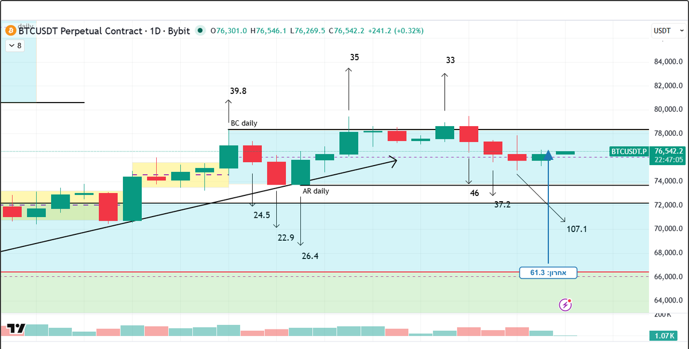
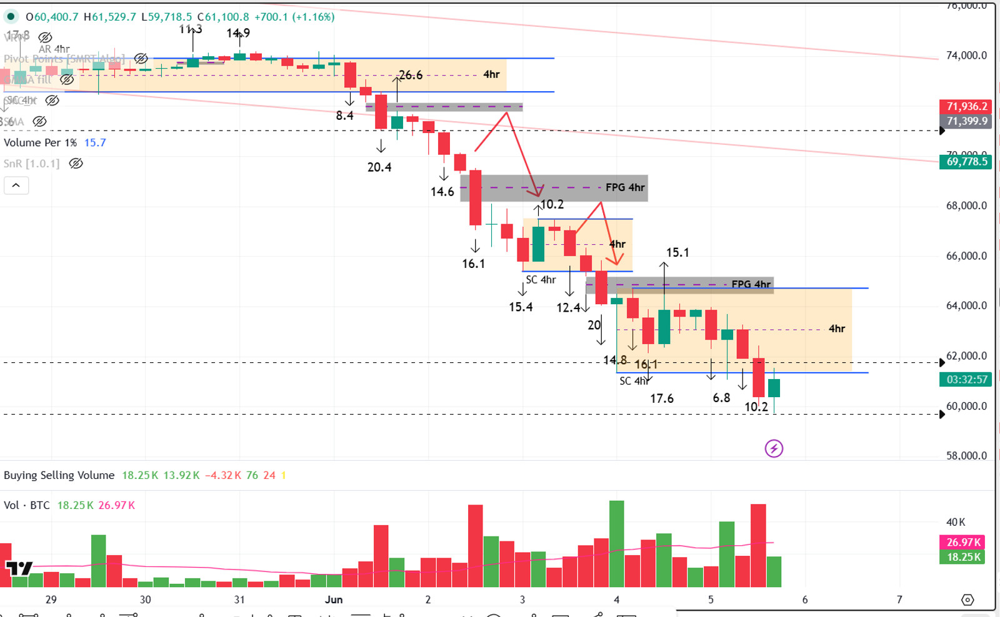
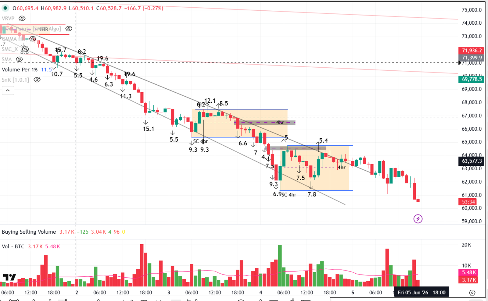
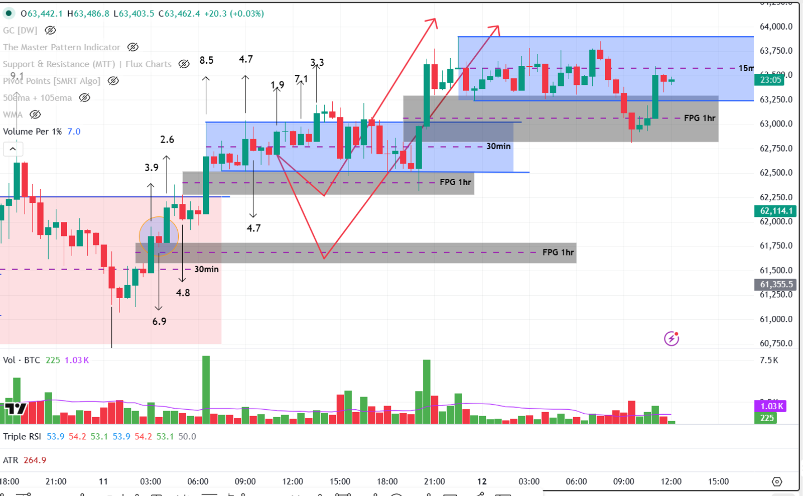
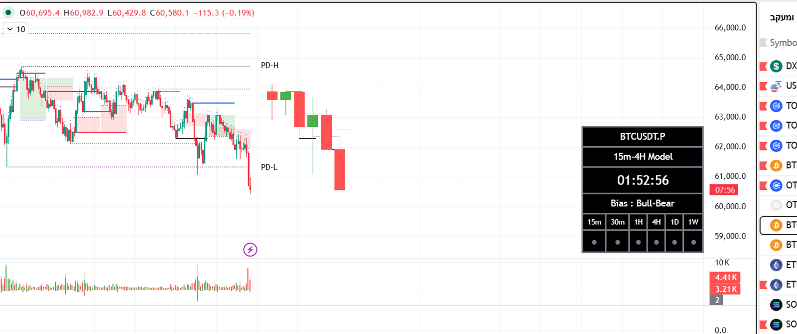
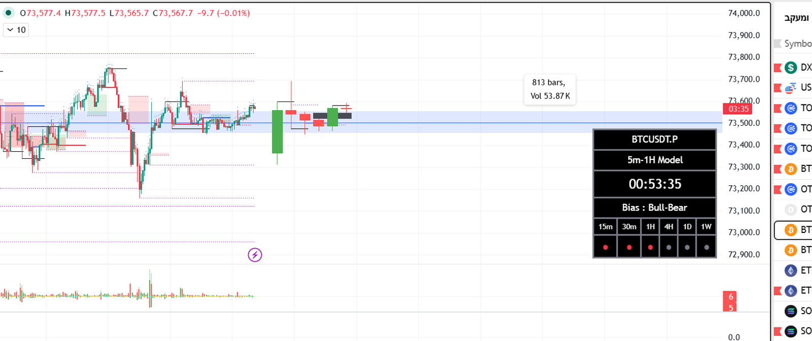
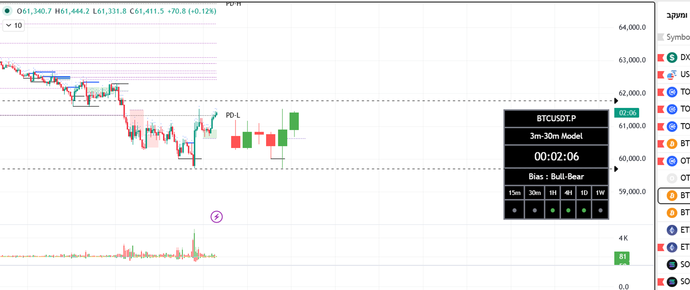

נוצר אוטומטית · 2026-05-01 16:50 שעון ישראל · BYBIT:BTCUSDT.P
🎯 ה-TR שזוהה

שדה
ערך
סוג
פיזור (Distribution)
גג ה-TR
BC daily ב-$78,332.6 (נוצר 17 באפריל)
רצפת ה-TR
AR daily ב-$73,653.6 (נוצר 20 באפריל)
התחלת ה-TR
17 באפריל 2026
משך
14 ימים
גובה
$4,679 (6.3%)
מחיר נוכחי
$77,287 — בתוך ה-TR (חלק עליון, 78% מהגובה)
📌 מה רואים בתמונה
מה
תיאור
✅
קווי BC daily ו-AR daily מסומנים בבירור
✅
חץ עולה שחור מתחת ל-AR — סימון תנועה צפויה
✅
תיבות צהובות = Wyckoff TR פנימי קטן יותר
✅
מלבן כחול-בהיר רחב = ה-TR הראשי
✅
שיא ווליום 100K ביום הירידה ל-AR — מאשר Wyckoff effort-vs-result
📊 ווליום פר 1% — נתונים
נר
ערך + השוואה
פאזה A — BC daily (17 אפריל)
39.8 — מקור הייחוס לפאזה A
נר ה-AR daily (20 אפריל)
(הסוכן יחשב מה-OHLCV ויקרא מהאינדיקטור בריצה)
נר אחרון שנסגר (30 אפריל)
61.3 — 🚨 גדול מפאזה A → סיגנל אבסורבציה / חיכוי להיפוך
ניסיון פריצה גג #1 (23 אפריל)
35 — קטן מפאזה A → ניסיון חלש
ניסיון פריצה גג #2 (26 אפריל)
33 — קטן מפאזה A → ניסיון חלש
פריצה גג מוצלחת
אין עדיין
ניסיון פריצה רצפה / Spring
אין עדיין
💡 מסקנה מהווליום: שני ניסיונות פריצת הגג (35, 33) נכשלו עם ווליום קטן מפאזה A — חולשת קונים. אבל נר 30/4 (האחרון שנסגר) הראה ווליום פר 1% של 61.3 — גדול משמעותית מפאזה A (39.8). זה סיגנל אבסורבציה — מאמץ ברמת climax בתוך ה-TR, מסמן בדרך כלל חיכוי להיפוך מגמה. לפי המתודולוגיה שלך: ווליום נר ≥ ווליום פאזה A ⇒ אות לחיכוי להיפוך.
📊 התובנה — Wyckoff
שלב
מצב
Phase A
✅ הסתיים — BC + AR נוצרו 17-20 באפריל. מבנה פיזורי (BC קודם, אחר כך AR מתחת)
Phase B — שליטה
👁️ שליטת מוכרים מתחזקת. הקונים מתקשים בעליה ללא מאמץ אמיתי, וההיצע מתעצם בנרות הירידה.
Phase B — אינדיקציה
🔴 תהליך פיזורי מתחזק. ווליום הירידה ל-AR היה הגבוה ביותר בתהליך — משמעותית מעל הממוצע של הימים שקדמו לו.
Phase C
👀 חיפוש UTAD מעל 78,332 (סיגנל ראשי לשורט) או Spring מתחת 73,653 (היפוך לאיסוף — פחות סביר לפי B)
ווליום נוכחי
43.66K — מתחת לשיא 100K של יום ה-AR; ירידה תקינה ל-Phase B
🔄 תת-מגמות בתוך פאזה B
תקופה
תנועה / ווליום / שליטה
21-24 אפריל
עליה מ-AR (73,653) לבדיקת BC (~78,000). הווליום ירד הדרגתי לאורך העליה — מאמץ קטן יחסית לזה של ה-AR climax. ⇒ שליטת קונים חלשה — עליה ללא מאמץ אמיתי.
25-26 אפריל
בדיקת גג ושיא מקומי בערך 78,500. ווליום נמוך יחסית למאמצים קודמים — אין כוח פריצה. ⇒ קונים מותשים, מבחן הגג בלי תוצאה.
27-30 אפריל
ירידה מ-78K ל-76K. ווליום עולה הדרגתית, נר הירידה של 29 אפריל היה הגבוה משלושת הנרות שקדמו לו. ⇒ שליטת מוכרים מתחזקת — מאמץ עולה בכיוון הירידה.
💡 סיכום פאזה B: שליטת מוכרים מתחזקת. הקונים התקשו ללא מאמץ אמיתי בעליה לבדיקת BC, וההיצע מתעצם בנרות הירידה. אם הירידה תמשיך עם ווליום ⩾ ווליום פאזה A (39.8) — סיגנל ל-UTAD או breakout כושל של AR.
💡 תודעה ראשונית: בהתבסס על Phase A (פיזורי) + Phase B (שליטת מוכרים, חולשת קונים בקצה) — תודעת שורט עד שיוכח אחרת ב-Phase C. ממתינים ל-UTAD כסיגנל הראשי.
🎯 פעולה — סקירה
תרחיש
פעולה
UTAD מעל $78,332 + ירידה חלשה
👁️ סיגנל ראשי — תודעת שורט, ממתינים ל-Phase D + SOW + LPSY
Spring מתחת ל-$73,653 + עליה חזקה
👁️ היפוך פוטנציאלי לאיסוף — תודעת לונג, אישור ב-Phase D + SOS + LPS
המשך דשדוש בתוך ה-TR
❌ אין סיגנל — ממתינים, לא נכנסים
📋 תרחיש 1: UTAD מעל $78,332 — תודעת שורט
פירוט
ערך
מה זה UTAD
Upthrust After Distribution — נר שפורץ מעל ה-BC (78,332) אבל סוגר חזרה לתוך ה-TR. מלכודת שוורית.
איך מזהים בזמן אמת
נר 1D שעבר מעל 78,332 בתוך הנר, אבל סוגר מתחת. חובה לחכות לסגירת הנר.
מה זה מאשר
Phase C של פיזור — המוסדיים מוכרים לקהל שקופץ על "פריצה"
למה לא נכנסים מיד
בפוקוס שלך זה Phase C, לא נקודת כניסה — חייבים לחכות ל-Phase D
מה מחפשים אחר כך
SOW (Sign of Weakness) — נר ירידה רחב + ווליום עולה + סגירה בקצה התחתון
ואחר כך
LPSY (Last Point of Supply Yet) — תיקון עולה חלש על ווליום נמוך, לא חוזר לגג ה-TR
נקודת כניסה לשורט
בפריצת הנמוך של ה-LPSY, אחרי Significant Bar שני
Stop Loss
מעל הפתיל של ה-UTAD ($78,332+)
יעד Take Profit
PNF target מהאינדיקטור, או 1× גובה ה-TR מתחת ל-AR ($68,974)
📋 תרחיש 2: Spring מתחת ל-$73,653 — תודעת לונג (היפוך פוטנציאלי)
פירוט
ערך
מה זה Spring
נר שיורד מתחת ל-AR (73,653) אבל סוגר חזרה לתוך ה-TR. מלכודת דובית.
איך מזהים
נר 1D שירד מתחת ל-73,653 בתוך הנר, וסגר מעל. ווליום צריך להיות נמוך מה-AR climax.
למה זה היפוך פוטנציאלי
זוהינו פיזור (BC>AR). אם פתאום קונים בולעים את הירידה — ייתכן שטעינו וזה איסוף.
למה זה פחות סביר
Phase A + B שלנו מצביעים על פיזור (BC קודם, ירידה ל-AR בווליום פסיכי)
כללי וודאות
חייב Spring חזק (חדירה משמעותית מתחת לקו) + עליה אגרסיבית מיד אחריו עם ווליום נמוך
מה מחפשים אחר כך
Test of Spring — תיקון לאזור ה-low בווליום נמוך (אישור)
ואחר כך
SOS (Sign of Strength) — נר עליה רחב על ווליום עולה
ואז
LPS (Last Point of Support) — תיקון על ווליום נמוך, לא חוזר לרצפה
נקודת כניסה ללונג
בפריצת ה-Significant Bar של LPS
Stop Loss
מתחת לפתיל ה-Spring ($73,653−)
יעד Take Profit
PNF target מעל BC, או 1× גובה ה-TR מעל BC ($83,011)
📋 תרחיש 3: המשך דשדוש — אין סיגנל
פירוט
ערך
מה קורה
המחיר ממשיך לנוע בתוך ה-TR (73,653-78,332) ללא פריצה ברורה
למה לא נכנסים
זה Phase B — אין סיגנל סטרוקטורלי לכניסה
הסכנה אם נכנסים
סטופ קל לתפוס (מבחנים פנימיים יוצרים תנודות 2-3%) ויחס סיכון:רווח לא מספיק
מה כן עושים
מנטרים את ה-TF הקטנים יותר (1H, 15m) לזיהוי מבנים פנימיים
למה זה חכם
"המסחר הוא עניין של סטטיסטיקה — חייב יחס תועלת:סיכון" (מהמתודולוגיה שלך)
מתי המתנה תסתיים
כשמופיע UTAD או Spring בקצוות ה-TR
📊 ניתוח גרף 4 שעות — BTCUSDT.P איסוף
נוצר אוטומטית · 2026-05-01 16:50 שעון ישראל · BYBIT:BTCUSDT.P
🎯 ה-TR שזוהה

שדה
ערך
סוג
איסוף (Accumulation)
גג ה-TR
AR 4hr ב-$76,060.7 (נוצר 29 באפריל)
רצפת ה-TR
SC 4hr ב-$74,900 (נוצר 29 באפריל)
התחלת ה-TR
29 באפריל 2026
משך
2 ימים
גובה
$1,160 (1.5%)
מחיר נוכחי
$77,287 — מעל ה-AR ב-1.6% (פריצה אקטיבית)
📌 מה רואים בתמונה
מה
תיאור
✅
מלבן "4hr" צהוב מימין — TR אקטיבי 4H
✅
קווי AR 4h (76,060) ו-SC 4hr (74,900) מסומנים בבירור
✅
קווי SC 1hr ו-1HR \ 4HR מסביב — TRs פנימיים בטיים-פריימים נמוכים
✅
נר ה-SC 4hr ב-29/4 19:00 הראה ווליום הגבוה ביותר (21.7K) — climax אמיתי
🚨
המחיר חצה את ה-AR (76,060) ב-1/5 בבוקר — פריצה למעלה אקטיבית
📊 ווליום פר 1% — נתונים
נר
ערך + השוואה
פאזה A — נר ה-SC 4hr (29 אפריל 19:00)
44.5 — מקור הייחוס לפאזה A
נר ה-AR 4hr (29 אפריל 23:00)
20.7 — קטן מ-SC ✓ AR נורמלי (תגובה אוטומטית)
נר אחרון שנסגר (1/5 11:00 ישראל)
177.9 — 🚨 גדול מאוד מפאזה A → סיגנל אבסורבציה חזק (ערך גבוה כי תנועה זעירה +0.030%)
פריצה גג ראשונה (30/4 15:00 ישראל)
22.3 — קטן מפאזה A → סגירה ראשונה מעל AR (76,422), אך נר 23:00 ישראל חזר מתחת — פריצה לא מאומתת
פריצה גג מאומתת (1/5 07:00 ישראל)
9.0 — קטן מפאזה A → SOS אמיתי, פריצה במאמץ נמוך
ניסיונות פריצה גג כושלים (30/4 03:00 ישראל)
55.8 — 🚨 גדול מפאזה A על נר שלא הצליח לסגור מעל = ניסיון כבד שנכשל (היצע פעיל)
ניסיון פריצה רצפה / Spring
אין — לא נחצה SC מאז שנוצר
💡 מסקנה 4H: מבחן הגג ה-AR (76,060) ב-30/4 03:00 ישראל נכשל על ווליום פר 1% של 55.8 — גדול מפאזה A (44.5). זה היצע אגרסיבי, אבל ה-30/4 15:00 ישראל סגר ראשון מעל AR (22.3, מתחת לפאזה A). הפריצה המאומתת ב-1/5 07:00 ישראל הייתה במאמץ נמוך (9.0 << 44.5) — SOS אמיתי לפי המתודולוגיה (פריצה אמיתית עם מאמץ נמוך). הנר האחרון שנסגר (1/5 11:00 ישראל) עם ווליום 177.9 — אבסורבציה חזקה. שילוב = איסוף בעיצומו, פוטנציאל המשך עליה.
📊 התובנה — Wyckoff
שלב
מצב
Phase A
✅ הסתיים — SC + AR נוצרו ב-29 באפריל. מבנה איסופי (SC קודם, אחר כך AR מעל)
Phase B — שליטה
👁️ שליטת קונים. הפריצה מעל AR אומתה במאמץ נמוך, אין מוכרים אגרסיביים בקצה
Phase B — אינדיקציה
🟢 תהליך איסוף מתחזק. ווליום ה-SC היה הגבוה בתהליך (climax אמיתי). הפריצה הבאה הייתה במאמץ נמוך — אישור איסוף.
Phase C
⏭️ מדלגים עליה — לא היה Spring קלאסי, ה-SC עצמו היה ה-test הקריטי
Phase D
🚨 פעיל — פריצה מעל AR אישרה SOS. ממתינים ל-LPS (תיקון לאזור ה-AR) לכניסה ללונג
ווליום נוכחי
נר אחרון 177.9 — חורג מפאזה A; אבסורבציה חזקה לפני המשך עליה
🔄 תת-מגמות בתוך פאזה B
תקופה
תנועה / ווליום / שליטה
29/4 19:00-23:00 ישראל
ירידה חזקה ל-SC ב-74,900. ווליום פסיכי (21.7K) — climax מכירה. ⇒ סוף שליטת מוכרים, מוסדיים בולעים.
30/4 03:00 ישראל
ניסיון פריצה כושל ראשון (wick מעל AR, סגירה מתחת). V/1% = 55.8 — גדול מפאזה A. ⇒ ניסיון כבד שנכשל — היצע עדיין פעיל.
30/4 15:00 ישראל
פריצה ראשונה — סגירה ראשונה מעל AR (76,422 > 76,060) על V/1% = 22.3. ⇒ קונים נכנסים, אך לא חד משמעי.
30/4 23:00 ישראל
חזרה אל ה-TR — סגירה מתחת ל-AR (76,301). ⇒ פריצה לא אומתה, מבחן חוזר נדרש.
1/5 07:00 ישראל
פריצה מאומתת מעל AR במאמץ נמוך (9.0 < 44.5). תנועה +1.02%. ⇒ שליטת קונים, SOS אמיתי.
1/5 11:00 ישראל
נר אבסורבציה (תנועה 0.030%, ווליום 5.3K). V/1% = 177.9 — חורג מ-Phase A. ⇒ אבסורבציה אקטיבית לפני המשך.
💡 סיכום פאזה B: שליטת קונים מתחזקת. ה-SC היה climax אמיתי (ווליום הגבוה בתהליך), הדשדוש שאחריו היה במאמץ קטן יותר (היצע מתייבש), והפריצה ב-1/5 הייתה במאמץ נמוך — SOS תקין. אבסורבציה בנר האחרון מוסיפה אישור.
💡 תודעה ראשונית: בהתבסס על Phase A (איסופי) + Phase B (שליטת קונים, SOS אומת) — תודעת לונג ברמת ה-4H. אבל ה-Daily בפיזור — אז זו תודעת לונג קצרת-מועד עד שמגיעים ל-BC daily (78,332), ושם זו נקודת ההחלטה.
🟠 סתירה בין TFs:
Daily: פיזור (BC 78,332 / AR 73,653) — תודעת שורט
4H: איסוף (AR 76,060 / SC 74,900) — תודעת לונג, Phase D פעיל
זה micro-accumulation בתוך macro-distribution. ה-4H יוביל את המחיר עד BC daily (78,332), ושם נקודת ההחלטה: אם יסגור מעל = פריצה ביומי גם, אם יסגור מתחת = UTAD ביומי.
🎯 פעולה — סקירה
תרחיש
פעולה
המחיר נשאר מעל $76,060 + ווליום עולה
✅ Phase D איסוף 4H — חיפוש LPS לכניסה ללונג קצר טווח
המחיר עולה ל-$78,332 (BC היומי)
🚨 נקודת החלטה קריטית — אם סגירה מתחת = UTAD ביומי (תודעת שורט גדולה)
המחיר חוזר מתחת $76,060 על ווליום נמוך
⚠️ פריצה כושלת — חזרה ל-Phase B 4H, ביטול תודעת לונג
נר שפורץ מעל BC היומי (78,332) אבל סוגר חזרה למטה. מלכודת שוורית בקצה ה-TR היומי.
איך מזהים
נר 4H או יומי שעובר מעל 78,332 בתוך הנר אבל סוגר מתחת. חובה לחכות לסגירת הנר.
תזמון פוטנציאלי
בהתחשב במהירות העליה הנוכחית, ייתכן הגעה ל-78,332 תוך 1-2 ימים.
מה זה מאשר ביומי
Phase C של פיזור Daily — אישור תודעת שורט הגדולה
למה לסגור את הלונג ב-78,332
זה הגבול העליון של ה-TR היומי. ההסתברות לדחייה גבוהה (במיוחד עם תהליך פיזורי ביומי).
כניסה לשורט
אחרי UTAD + SOW + LPSY ביומי (יקח כמה ימים)
Stop Loss שורט
מעל הפתיל של ה-UTAD
יעד Take Profit
1× גובה ה-TR היומי מתחת ל-AR = $68,974
📋 תרחיש 3: פריצה כושלת של AR 4hr — אין סיגנל / יציאה
פירוט
ערך
מה קורה
המחיר חוזר מתחת ל-AR 4hr (76,060) וסוגר נר 4H מתחת
מה זה מבטל
ה-SOS שזיהינו, ה-Phase D מתבטלת — חזרה ל-Phase B איסוף
פעולה אם בעמדת לונג
יציאה מיידית בסגירת הנר. הפסד מוגבל
פעולה אם לא בעמדה
אין סיגנל — ממתינים ל-Spring מתחת ל-SC או ל-SOS חוזר
סימן שמחזק את התרחיש
אם הנר חוזר מתחת ל-AR בווליום גבוה מהפריצה (גדול מ-9.0) — דחייה אמיתית
תרחיש המשך
חזרה ל-SC (74,900). שם נבדק שוב אם זה Spring או breakdown אמיתי.
📊 ניתוח גרף שעתי — BTCUSDT.P פיזור
נוצר אוטומטית · 2026-05-01 16:50 שעון ישראל · BYBIT:BTCUSDT.P
🎯 ה-TR שזוהה

שדה
ערך
סוג
פיזור (Distribution) — מיקרו, קצר טווח
גג ה-TR
BC 1hr ב-$76,644.3 (נוצר 30/4 16:00 ישראל)
רצפת ה-TR
AR 1hr ב-$76,035.6 (נוצר 30/4 17:00 ישראל)
התחלת ה-TR
30 באפריל 2026 16:00 ישראל
משך
~20 שעות
גובה
$609 (0.8%) — קטן מאוד
מחיר נוכחי
$77,339 — מעל ה-BC ב-$695 (0.9%) 🚨 פריצה אקטיבית מעלה
📌 מה רואים בתמונה
מה
תיאור
✅
קווי BC 1hr (76,644) ו-AR 1hr (76,035) — מסומנים בבירור
✅
קווי AR 4hr, SC 4hr, 1HR \ 4HR — context של ה-4H ברקע
✅
הרבה סימונים שלך ל-Volume Per 1%: 10.4, 7.1, 14.1, 9.8, 13.9, 16.6, 14.6, 8.8 — היסטוריית התהליך
🚨
המחיר הנוכחי (77,339) מעל BC 1hr — ה-TR השעתי כבר נפרץ למעלה
📊
נר אחרון שנסגר עם V/1% = 11.1 (סימון כחול)
📊 ווליום פר 1% — נתונים
נר
ערך + השוואה
פאזה A — BC 1hr (30/4 16:00 ישראל)
24.6 — מקור הייחוס לפאזה A
נר ה-AR 1hr (30/4 17:00 ישראל)
23.8 — קרוב ל-BC ✓ AR נורמלי
ניסיון פריצה כושל #1 (1/5 07:00 ישראל)
4.4 — קטן מאוד מפאזה A → ניסיון חלש
ניסיון פריצה כושל #2 (1/5 08:00 ישראל)
7.8 — קטן מפאזה A → ניסיון חלש
פריצה גג מאומתת (1/5 09:00 ישראל)
8.7 — קטן מפאזה A → SOS אמיתי במאמץ נמוך
נר אחרון שנסגר (1/5 15:00-16:00 ישראל)
11.1 — קטן מפאזה A ✓ תקין להמשך טרנד
ניסיון פריצה רצפה / Spring
אין — לא נחצה AR 1hr מאז שנוצר
💡 מסקנה 1H: שני ניסיונות פריצה כושלים (4.4, 7.8) הקדימו את הפריצה האמיתית — שניהם במאמץ קטן מאוד מפאזה A (24.6). הפריצה המאומתת (8.7) הגיעה גם היא במאמץ נמוך → SOS אמיתי לפי המתודולוגיה (פריצה אמיתית במאמץ נמוך). הנר האחרון שנסגר (11.1) קטן מפאזה A — תקין, אין סיגנל היפוך. שילוב = פריצה תקינה של ה-TR השעתי, המשך טרנד עליה.
📊 התובנה — Wyckoff
שלב
מצב
Phase A
✅ הסתיים — BC + AR נוצרו ב-30/4 16:00-17:00 ישראל. מבנה פיזורי אבל קצר ומיקרו
Phase B — שליטה
👁️ שליטת קונים. שני ניסיונות פריצה כושלים תחילה — אך ללא ווליום היצע משמעותי
Phase B — אינדיקציה
🟢 סתירה לסוג ה-TR. למרות שהוא מסומן פיזור, הפריצה הייתה מעלה ולא מטה — משויך לטרנד עליה של 4H
Phase C
⏭️ מדלגים — לא היה UTAD כושל, הפריצה הייתה מוצלחת
Phase D
✅ פעיל — הפריצה מעל BC אישרה SOS
ווליום נוכחי
נר אחרון 11.1 < פאזה A 24.6 — תקין להמשך
🔄 תת-מגמות בתוך פאזה B
תקופה
תנועה / ווליום / שליטה
30/4 16:00-17:00 ישראל
הקפצה ל-BC 76,644 ואז ירידה ל-AR 76,035. ווליום שווה (24.6 ו-23.8). ⇒ הקמת ה-TR המיקרו.
30/4 לילה — 1/5 בוקר
דשדוש בין BC ל-AR עם נטייה לקראת הגג. ווליום נמוך יורד. ⇒ היצע מתייבש.
1/5 07:00-08:00 ישראל
שני ניסיונות פריצה כושלים (V/1% = 4.4 ואז 7.8) — wick מעל BC, סגירה מתחת. ⇒ קונים בודקים, מוכרים מתישים.
1/5 09:00 ישראל
פריצה אמיתית מעל BC ב-SOS: V/1% = 8.7, תנועה +0.69%, close 77,078. ⇒ שליטת קונים מאושרת.
1/5 09:00 — 16:00 ישראל
המשך עליה ל-77,339. הנר האחרון V/1% = 11.1 — קטן מפאזה A. ⇒ טרנד עליה תקין, ללא סיגנלי היפוך.
💡 סיכום פאזה B: ה-TR השעתי הזה היה למעשה פסק זמן קצר בתוך תהליך עליה רחב יותר (פריצת ה-4H accumulation). הקונים ניסו פעמיים לפרוץ ונכשלו, אבל בפעם השלישית (פריצה במאמץ נמוך) — הצליחו. מבחינת המתודולוגיה: פריצה אמיתית, המשך טרנד.
💡 תודעה ראשונית 1H: תודעת לונג ברורה — SOS אומת, ווליום תומך, אין סיגנלי היפוך. אבל ה-Daily בפיזור — אז זו לונג קצרת-מועד עד שמגיעים ל-BC daily (78,332).
🟠 תודעה מסכמת — סינתזה Daily → 4H → 1H:
טיים-פריים
סוג TR
פאזה
תודעה
Daily
פיזור (BC 78,332 / AR 73,653)
Phase B מתקדם
📉 תודעת שורט (לטווח רחב)
4H
איסוף (AR 76,060 / SC 74,900)
Phase D פעיל
📈 תודעת לונג (טווח בינוני)
1H
פיזור-מיקרו (BC 76,644 / AR 76,035) — נפרץ למעלה
Phase D הסתיים
📈 תודעת לונג (טווח קצר)
המסקנה: עליה בטווח הקצר והבינוני, אבל זמנית. צפי המחיר: עליה ל-BC daily ($78,332). שם נקודת ההחלטה הקריטית — אם UTAD (סגירה מתחת) → היפוך לתודעת שורט גדולה. אם פריצה אמיתית מעל = פריצה גם של ה-Daily ועליה ל-$83,000+.
⚠️ חשוב: זוהי תופעה של micro-accumulation בתוך macro-distribution. הסבירות הסטטיסטית לפי המתודולוגיה: ה-Daily ינצח בסוף — תודעת השורט הסופית עדיין רלוונטית.
🎯 פעולה — סקירה
תרחיש
פעולה
המחיר עולה ל-$78,332 (BC היומי)
🚨 נקודת החלטה! שם פעולה ביומי — UTAD או פריצה אמיתית
תיקון ל-BC 1hr (76,644) על ווליום נמוך
✅ LPS — נקודת כניסה ללונג קצר טווח עם יעד ל-BC daily
תיקון אחרי SOS שלא חוזר מתחת ל-BC שהפך לתמיכה (76,644). נקודת קנייה אחרונה.
איך מזהים
נר 1H שיורד אל אזור 76,644-76,800 על ווליום נמוך (פחות מ-Phase A 24.6), ולא נסגר מתחת. אישור: נר ירוק עם close בקצה העליון
נקודת כניסה ללונג
בסגירת נר 1H ירוק עם close מעל ה-BC 1hr אחרי הטסט
Stop Loss
מתחת לפתיל הנמוך של ה-LPS או מתחת ל-AR 1hr (76,035) להגנה רחבה יותר
יעד Take Profit ראשון
BC daily ב-$78,332 (גבול עליון של ה-TR היומי)
יעד שני
אם פריצת BC daily = 1× גובה ה-TR היומי מעל = $83,011
יחס סיכון:רווח
~1:3 (סטופ ~$200, יעד ~$1,000)
📋 תרחיש 2: הגעה ל-BC daily ($78,332) — נקודת החלטה
פירוט
ערך
תזמון פוטנציאלי
בקצב הנוכחי, הגעה ל-78,332 תוך 4-12 שעות (1-3 נרות 4H)
אם UTAD ביומי (סגירה מתחת)
🚨 סגירת לונג מיידית, התחלת תכנון שורט גדול
אם פריצה ביומי (סגירה מעל)
✅ המשך לונג, יעד $83,011
סימן מקדים ל-UTAD
ווליום פר 1% של נר ה-78,332 ⩾ פאזה A היומי (39.8) = climax-level
סימן מקדים לפריצה אמיתית
ווליום פר 1% נמוך מפאזה A היומי + close בשליש העליון של הנר
📋 תרחיש 3: כישלון פריצה — חזרה מתחת ל-BC 1hr
פירוט
ערך
מה קורה
המחיר חוזר מתחת ל-76,644 (BC 1hr) וסוגר נר 1H מתחת
מה זה מבטל
ה-SOS שזיהינו, ה-Phase D 1H מתבטלת
פעולה אם בעמדת לונג
יציאה בסגירת הנר. הפסד מוגבל.
סימן שמחזק את התרחיש
אם הנר חוזר מתחת ל-BC בווליום גדול מ-Phase A (⩾24.6) — דחייה אמיתית
תרחיש המשך
חזרה ל-AR 4hr (76,060) ובדיקה אם זה LPS רחב או breakdown אמיתי
📊 ניתוח גרף 30 דקות — אסטרטגיית 3 שלבים לונג מתפתח 🚨
נוצר אוטומטית · 2026-05-01 15:30 שעון ישראל · BYBIT:BTCUSDT.P · Pane 2 (מורחב)
🎯 גרף Pane 2 — הסימונים האישיים שלך

💡 מקור 3 השלבים: מהמסמך האישי שלך "פאזה A + B + תודעה.docx" (שורות 262, 273, 342-356) — אסטרטגיית כניסה מבוססת "4 ווי" שמתורגמת ל-3 שלבים: שלב 1 = יצירת תהליך/דשדוש, שלב 2 = שבירה + יצירת איזור ערך, שלב 3 = Retest + סגירה פיזית מעל המלבן.
🎯 קריאת ה-TR מהסימונים שלך: ה-TR העיקרי המסומן על Pane 2 הוא AR 30Min ≈ $77,300 (גג) ↔ SC 30Min ≈ $76,400 (רצפה). גובה $900 (~1.16%). בנוסף יש סימוני TR פנימיים (AR 15Min, SC 15Min, BC 15min, FPG) ותהליך פיזורי מוקדם בתיבה הצהובה משמאל (16-21 באפריל).
📋 שלב 1 — יצירת ה-TR (Phase A מקומית) ✅ הושלם
שדה
ערך
תקופת היווצרות
27 באפריל — 1 במאי 2026 (כ-4 ימים, 192 נרות 30m)
SC 30Min (רצפת ה-TR)
$76,400 — נר climax עם ווליום גבוה (זוהה בסוף תהליך הפיזור הצהוב)
AR 30Min (גג ה-TR)
$77,300 — תגובה אוטומטית מעלה אחרי ה-SC
גובה ה-TR
$900 (~1.16%)
סימוני TR פנימיים
AR 15Min ב-$76,000-76,150, SC 15Min ב-$74,900, BC 15min + FPG בתוך ה-TR
קו אמצע (30min)
$76,800 — קו מקווקו סגול בתוך ה-TR
סטטוס
✅ הושלם — TR ברור עם גבולות מובחנים על Pane 2
📋 שלב 2 — שבירת ה-AR + יצירת איזור ערך 🚨 בעיצומה
שדה
ערך
נסיון פריצה ראשון (כושל)
1/5 12:00 ISR · H=$77,488, C=$77,399 · ווליום 2,661 · V/1% = 6.91 (נמוך) — חרג מעל $77,300 אבל לא סגר חזק מעל
1/5 15:00 ISR · O=$77,420 → גבוה $77,749 · נמוך $77,355 · טרם נסגר (פתוח כעת ב-$77,742)
שינוי בנר הפריצה
+0.42% (נכון ל-15:30 ISR)
סטטוס פריצה
🟡 בעיצומה — חורגת מעל AR 30Min ($77,300) אבל הנר לא נסגר עדיין
איזור הערך הפוטנציאלי
אם הנר ייסגר מעל $77,300: מלבן ערך = $77,213 (פתיל תחתון של 14:00) → $77,749 (גבוה הנר הנוכחי)
תנאי לאישור שלב 2
🎯 סגירת הנר ב-15:30 ISR מעל $77,300 + ווליום פר 1% נמוך (אידיאלית מתחת ל-V/1% של נר ה-AR המקורי)
📋 שלב 3 — Retest על איזור הערך + סגירה פיזית מעל ⏳ ממתין
תנאי
סטטוס
שלב 2 הושלם (סגירה מעל $77,300)
⏳ ממתין לסגירת הנר ב-15:30 ISR
חזרה לתוך מלבן הערך
⏳ צפוי בנרות הקרובים (16:00-18:00 ISR)
סגירה פיזית מעל המלבן ברטסט
⏳ זה הטריגר לכניסה
נקודת כניסה צפויה
📍 סגירת נר 30m מעל המלבן אחרי Retest, סביב $77,300-77,500
Stop Loss
🛑 מתחת ל-$77,213 (פתיל תחתון של נר 14:00) או יותר אגרסיבי: $76,800 (קו 30min אמצעי)
יעד Take Profit
🎯 $78,332 (BC daily = Decision Point) · אם פורצים מעל: יעד $83,011 (1× גובה TR יומי)
RR משוער
~1:2.5 ($300-500 סיכון מול $830 רווח לפני Decision Point)
💡 מסקנה 30m (4-חלקי):תיאור עובדה: ה-TR שזוהה על Pane 2 (AR 30Min $77,300 / SC 30Min $76,400) נמצא כעת ב-שלב 2 פעיל. הנר ב-1/5 15:00 ISR שובר את ה-AR 30Min בפעם השלישית (אחרי 2 כשלונות) במחיר $77,742. השוואה כמותית: שני נסיונות הפריצה הקודמים (12:00, 14:00) היו עם V/1% של 6.91 ו-12.99 — מעורב. הפריצה הנוכחית טרם נסגרה אז ווליום סופי לא ידוע. פרשנות Wyckoff: אחרי 2 כשלונות במאמץ נמוך-בינוני (היצע מתייבש?) הקונים נוקטים ניסיון 3. כיוון פוטנציאלי: אם הנר ייסגר חזק מעל $77,300 + ווליום פר 1% נמוך = SOS אמיתי. אם ייסגר חזרה מתחת = UT כושל ועדיין דשדוש בתוך ה-TR.
📊 התובנה — Wyckoff על 30m
שלב
מצב
Phase A
✅ הסתיים — SC 30Min ($76,400) + AR 30Min ($77,300) נוצרו ב-25-27 אפריל. מבנה איסופי (SC ראשון, AR אחרי, ווליום על SC גבוה)
Phase B — שליטה
👁️ שליטת קונים מתחזקת. הירידות בתוך ה-TR בווליום נמוך, העליות במאמץ סביר. אין מוכרים אגרסיביים בקצוות.
Phase B — אינדיקציה
🟢 תהליך איסופי מתחזק. ווליום ה-SC 30Min היה הגבוה בתהליך (climax אמיתי). הבדיקה השניה של ה-AR 30Min כשלה ב-12:00 ולכאורה גם ב-14:00 (אבסורבציה V/1%=12.99) — מאשר שמוכרים אינם דוחפים חזק.
Phase C
⏭️ מדלגים — לא היה Spring ניעורי, ה-SC 30Min היה ה-test הקריטי שהחזיק.
Phase D
🟡 בעיצומה — נר 15:00 ISR שובר את ה-AR 30Min. אם ייסגר מעל = אישור SOS. ממתינים ל-LPS (Retest).
ווליום נוכחי
נר 15:00 ISR טרם נסגר — ווליום סופי לא ידוע. נסיונות קודמים (12:00, 14:00) היו במאמץ סביר עד נמוך.
🔄 תת-מגמות בתוך פאזה B (תהליכים פנימיים)
תקופה
תנועה / ווליום / שליטה
16-21 אפריל (תיבה צהובה)
תהליך פיזורי קודם — ערוץ יורד עם קווי trend ורודים, סיום ב-FPG (Failed Process Generator). הניסיון הפיזורי כשל, מה שנתן לתהליך הבא בסיס איסופי.
22-24 אפריל
היפוך ועליה — היציאה מהתיבה הצהובה לכיוון $78K. נוצר BC 15min פנימי בשיא העליה. ⇒ הקונים שלטו זמנית.
25-27 אפריל
היווצרות ה-TR העיקרי — SC 30Min ב-$76,400 (climax בתחתית) ואז AR 30Min ב-$77,300 (תגובה). תהליך איסופי מתחיל. ווליום ה-SC היה הגבוה בכל התהליך.
28-29 אפריל
בדיקה תחתית פנימית — SC 15Min ב-$74,900 (חרגה מתחת ל-SC 30Min אבל חזרה מהר). זה היה STA פנימי — תנועת ניעור קטנה ללא כניסת מוכרים אמיתית. ⇒ אישור איסוף.
29 אפריל — 1 מאי 06:00 ISR
בדיקה תחתית שניה — AR 15Min ב-$76,000-76,150. עליה במאמץ נמוך מ-AR 15Min ל-מרכז ה-TR. ⇒ הקונים מתעצמים, המוכרים נחלשים.
1 מאי 06:00 ISR
פריצה פנימית מ-AR 15Min — נר SOS פנימי ($76,549→$77,148, V/1%=5.92). ⇒ הקונים בעלי שליטה ברמת 15m.
1 מאי 07:00-09:00
2× LPS פנימי — תיקונים ל-$76,888 ו-$76,835 בווליום נמוך. ⇒ אין רצון מכירה.
1 מאי 10:00-14:00
2× ניסיונות פריצה כושלים של AR 30Min — 12:00 (H=$77,488), 14:00 (H=$77,580 + אבסורבציה V/1%=12.99). הגבוהים מצטברים, התחתונים לא יורדים. ⇒ היצע מתייבש.
1 מאי 15:00 ISR (כעת)
נר פריצה שלישי - בעיצומו — H=$77,749, חורג חזק מעל AR 30Min. הנר טרם נסגר. ⇒ שלב 2 של אסטרטגיית 3 השלבים פעיל!
💡 סיכום פאזה B (30m): שליטת קונים מתחזקת לאורך התהליך. ה-SC 30Min היה climax איסוף אמיתי, התיקונים בתוך ה-TR (SC 15Min, AR 15Min) היו בווליום נמוך, ו-2 ניסיונות פריצה ראשונים בווליום מתפוגג מאשרים היצע נחלש. הניסיון השלישי כעת מתבצע — אם הנר ייסגר מעל $77,300 → SOS אמיתי + Phase D פעיל.
💡 תודעה ראשונית 30m: בהתבסס על Phase A (איסופי) + Phase B (שליטת קונים, היצע מתייבש) — תודעת לונג חזקה. אבל אסור להיכנס עכשיו — הנר טרם נסגר. הכניסה האידיאלית תהיה אחרי שלב 3 (Retest) על מלבן הערך של נר הפריצה.
🎯 מצב נוכחי + תוכנית פעולה
מצב
פעולה
בנר הנוכחי (1/5 15:00 ISR)
👁️ אל תיכנס עכשיו! הנר עדיין פתוח. מחכים לסגירה ב-15:30 ISR לפני כל החלטה.
אם הנר ייסגר מעל $77,300
✅ שלב 2 אושר. סמן את מלבן הערך. עבור לחיפוש שלב 3 (Retest). אין כניסה עד הרטסט!
אם הנר ייסגר מתחת ל-$77,300
❌ פריצה כושלת — UT 30m. ביטול תודעת לונג ב-30m. חזרה לדשדוש בתוך ה-TR.
שלב 3 — Retest צפוי
👀 חזרה לאזור $77,300-$77,500 (תוך המלבן) על ווליום נמוך, ואז סגירה פיזית מעל = טריגר כניסה.
Stop Loss בכניסה
🛑 מתחת לפתיל הנמוך של נר ה-Retest, או מתחת ל-$77,213 (פתיל הנר הקודם)
יעד ראשון
🎯 $78,332 = BC daily = Decision Point. אם פורצים → יעד $83,011
Decision Point (BC daily)
🚨 ב-$78,332 — נקודת החלטה קריטית. סגירה מעל = פריצה ב-Daily. סגירה מתחת = UTAD ביומי, היפוך לתודעת שורט.
פריצת AR 15Min ($76,644) — שלב 2 של ה-TR הקטן הפנימי
Retest פנימי
1/5 07:00
-0.13%
976
7.51
חזרה לתוך מלבן AR 15Min — חולשת מוכרים
SOS פנימי
1/5 10:00
+0.39%
2,661
6.91
נסיון פריצה ראשון מעל AR 30Min — חרג, לא סגר
אבסורבציה
1/5 14:00
+0.11%
1,412
12.99
🚨 אבסורבציה לפני פריצה — ווליום גבוה ללא תנועה. בדיקה כפולה של $77,300.
נר הפריצה (שלב 2)
1/5 15:00
+0.42%
טרם נסגר
—
🟡 פעיל! שובר את $77,300, מגיע ל-$77,749. ממתין לסגירה.
💡 סיכום אסטרטגיית 3 השלבים — מצב נוכחי:
✅ שלב 1: הושלם — TR 30m ברור עם AR 30Min $77,300 ↔ SC 30Min $76,400
🟡 שלב 2: בעיצומו — נר 15:00 ISR שובר את ה-AR. ממתין לסגירה ב-15:30 ISR.
⏳ שלב 3: ממתין — Retest לא קרה עדיין. זו ההזדמנות שלך לכניסה אם שלב 2 יאומת.
פעולה מיידית: צופים בנר 15:30 ISR. אם נסגר מעל $77,300 חזק → ממתינים לרטסט בנרות 16:00-18:00 ISR.
🟠 הסתירה Daily↔30m: Daily בפיזור (תודעת שורט מסויגת), 30m בפריצה אקטיבית (תודעת לונג). זוהי micro-accumulation בתוך macro-distribution. הלונג ב-30m תקף עד $78,332 (BC daily) = Decision Point. המתודולוגיה שלך מתירה זאת מפורשות (שורה 290 במסמך): "כן יכול להיות Spring וירידה מתחת לטווח מסחר לפרק זמן קצר אבל אני יודע ואני בתודעה של עליות מחיר".
📊 ניתוח גרף 15 דקות — אסטרטגיית 3 שלבים לונג פעיל 🚀
נוצר אוטומטית · 2026-05-01 15:45 שעון ישראל · BYBIT:BTCUSDT.P · Pane 2
🎯 גרף Pane 2 — 15 דקות עם הסימונים האישיים שלך
💡 מקור 3 השלבים: מהמסמך האישי שלך "פאזה A + B + תודעה.docx" (שורות 262, 273, 342-356) — אסטרטגיית כניסה מבוססת "4 ווי" שמתורגמת ל-3 שלבים.
🚀 גילוי קריטי — פריצה אקטיבית כעת! בנר 15:30 ISR (1/5) המחיר זינק ל-$78,141 (שיא מקומי) — עלה מ-$77,711 ל-$77,915 בנר אחד עם ווליום 3,583. זה $191 בלבד מ-BC daily ($78,332) — Decision Point קריטי!
📋 שלב 1 — יצירת ה-TR 15m (Phase A) ✅ הושלם
שדה
ערך
תקופת היווצרות
27-30 אפריל 2026 (~3 ימים, 288 נרות 15m)
SC 15Min (רצפה)
$74,900 — climax אמיתי בתחתית הנפילה
AR 15Min (גג ראשוני)
$76,000-$76,150 — תגובה אוטומטית מעלה
BC 15min (פנימי)
$77,800-$77,900 — שיא פנימי בעליה לפני ה-TR הנוכחי (מסומן בתיבה אפורה משמאל)
גובה ה-TR 15m
$1,250 (~1.65%) — מתחת ל-SC 15Min, רחב יותר מ-30m
סטטוס
✅ הושלם — TR מוגדר עם גבולות ברורים
📋 שלב 2 — שבירת ה-AR + יצירת איזור ערך 🚀 בעיצומה!
שדה
ערך
נר הפריצה הראשונה (06:15 ISR)
O=$76,641 → H=$77,429, C=$77,148 · ווליום 4,485 · V/1% = 6.79 · 🟢 SOS אמיתי במאמץ נמוך
🎯 $83,011 (1× גובה TR יומי מעל BC) — רק אם סגירת יום מעל $78,332
RR משוער
~1:1.5 לפני Decision Point ($210 סיכון מול $381 רווח). RR נמוך — שקול בקפידה.
💡 מסקנה 15m (4-חלקי):תיאור עובדה: ה-TR 15m נפרץ סופית בנר 15:30 ISR (O=$77,711 → H=$78,141, V/1%=13.7), אחרי 2× Retest מוצלחים על המלבן הקודם ($76,479-$77,255) ו-3 ניסיונות פריצה כושלים של $77,300. השוואה כמותית: נר ה-SOS הראשון (06:15 ISR) היה V/1%=6.79; הניסיונות הכושלים היו 8.86 ו-18.7; פריצת ה-15:30 הייתה V/1%=13.7 — גבוה אבל עדיין סביר ביחס לעוצמת התנועה. פרשנות Wyckoff: סדרת SOS מאשרת Phase D פעיל. הביצוע המהיר מ-$77,300 ל-$78,141 (430 פיפ ב-3 שעות) מאשר רכישה מוסדית. כיוון פוטנציאלי: המשך עליה לכיוון $78,332 (BC daily). שם נקודת ההחלטה — אם פורצים, יעד $83,011.
📊 התובנה — Wyckoff על 15m
שלב
מצב
Phase A
✅ הסתיים — SC 15Min ($74,900) + AR 15Min ($76,150) נוצרו ב-29 אפריל. ווליום SC גבוה (climax).
🚀 הפריצה הגדולה — O=$77,711 → H=$78,141, C=$77,915, V=3,583. שני שיאים נשברו: $77,800 (BC 15min פנימי) ו-$78,000 (פסיכולוגי). ⇒ Phase D מאומת.
1/5 15:45 (פתוח)
קונסולידציה ב-$77,950 — ווליום נמוך (681). ⇒ ממתין ל-Retest על מלבן הערך הצפוי בנרות הקרובים.
💡 סיכום פאזה B (15m): שליטת קונים מתחזקת לאורך כל התהליך. סדרה של 3 פריצות מאשרות (06:15 → 15:00 → 15:30) כל אחת חזקה יותר. ווליום פר 1% נשמר נמוך עד נר ה-SOS המסיבי. אבסורבציה ב-14:15 הייתה הסיגנל המבשר — קונים בולעים מכירה ללא תזוזה במחיר. אחרי הפריצה: ממתין ל-Retest כסט-אפ כניסה.
💡 תודעה ראשונית 15m: בהתבסס על Phase A (איסופי) + Phase B (שליטת קונים מאומתת) + Phase D (SOS חזק) — תודעת לונג חזקה מאוד. אבל אסור להיכנס עכשיו! המחיר רחוק מדי ממלבן הערך וה-RR לא מספיק טוב לפני BC daily. ממתינים ל-Retest על $77,705-$77,915.
🎯 מצב נוכחי + תוכנית פעולה
מצב
פעולה
בנר הנוכחי (1/5 15:45 ISR פתוח)
👁️ אל תיכנס עכשיו! המחיר $190 רחוק מ-BC daily. ה-RR גרוע אם נכנסים עכשיו עם סטופ מתחת ל-$77,705.
תרחיש Retest מוצלח
👀 חזרה לאזור $77,705-$77,915 (תוך מלבן הערך) על ווליום נמוך, ואז סגירה פיזית מעל $77,915 = טריגר כניסה. SL: $77,500.
תרחיש פריצה ישירה ל-BC daily
⏳ אם המחיר ממשיך עלייה ישירה ללא Retest — אל תרדוף. חכה ל-Retest שיגיע אחרי הגעה ל-$78,332.
תרחיש דחייה בנר 15:45+
❌ אם המחיר יחזור מתחת ל-$77,500 על ווליום גבוה = UT אפשרי. ביטול תודעת לונג זמנית.
Decision Point — BC daily $78,332
🚨 נקודת החלטה קריטית. כל החלטה תלויה במה שיקרה שם.
📊 סיכום ווליום פר 1% — נרות מפתח 15m
נר
זמן (ISR)
שינוי
ווליום
V/1%
פרשנות
SOS ראשון
1/5 06:15
+0.66%
4,485
6.79
🟢 פריצת AR 15Min במאמץ נמוך
Retest #1
1/5 07:15
-0.12%
592
4.93
🟢 חולשת מוכרים
Retest #2
1/5 09:45
-0.09%
637
7.08
🟢 שני בדיקה מוצלחת
פריצה #1 (כושלת)
1/5 11:15
+0.24%
2,093
8.86
🟡 חרג, לא נסגר חזק
אבסורבציה
1/5 14:15
+0.06%
1,217
18.7
🚨 קונים בולעים מכירה כבדה
פריצה #2 (15:00)
1/5 15:00
+0.11%
954
8.61
🟢 סגירה ראשונה מעל $77,500
המשך פריצה
1/5 15:15
+0.26%
1,402
5.35
🟢 push חזק במאמץ נמוך מאוד
נר ה-SOS הגדול
1/5 15:30
+0.26%
3,583
13.7
🚀 פריצה ל-$78,141!
נר 15:45 (פתוח)
1/5 15:45
+0.05%
681
13.6
קונסולידציה — חיכוי ל-Retest
💡 סיכום אסטרטגיית 3 השלבים — מצב נוכחי 15m:
✅ שלב 1: הושלם — TR 15m ברור עם SC 15Min $74,900 ↔ AR 15Min $76,150
🚀 שלב 2:הושלם! נר 15:30 ISR פרץ ל-$78,141 בווליום מסיבי. מלבן ערך: $77,705-$77,915.
⏳ שלב 3:ממתין ל-Retest! זו ההזדמנות שלך לכניסה.
פעולה מיידית: ממתין ל-Retest לתוך $77,705-$77,915 על ווליום נמוך → סגירה פיזית מעל $77,915 = טריגר כניסה. SL: $77,500. יעד: $78,332 (BC daily).
סיכום: כל ה-TFs הקטנים (15m, 30m, 1H, 4H) בלונג מאושר. רק ב-Daily יש תודעת שורט. הלונג ב-15m תקף עד $78,332 = Decision Point. שם תהיה ההחלטה הסופית.
📊 ניתוח SMC_X — Pane 3 Multi-TF
נוצר אוטומטית · 2026-05-01 18:25 שעון ישראל · BYBIT:BTCUSDT.P · Pane 3 (SMC_X Model)
💡 פנל זה מציג את הצ'ארטים של אינדיקטור SMC_X בשלושה טיים-פריימים שונים, כל אחד עם דשבורד ה-Bias של האינדיקטור (Bull-Bear). הצ'ארטים מציגים את כמות הברים שהוגדרה אחורה מהנר הנוכחי, עם Y axis מותאם לטווח high/low של אותם ברים, וווליום בתחתית.
🎯 גרף 15 דקות — 110 ברים

שדה
ערך
טווח ברים
110 ברים אחורה (כ-27.5 שעות)
טווח מחירים (גבוה ↔ נמוך)
$78,900 ↔ $75,805
גובה התקופה
$3,095 (~4.0%)
אינדיקטור
SMC_X · 15m-4H Model · Bias: Bull-Bear
ווליום נוכחי
~66.47K (תקופת 110 ברים)
🎯 גרף 5 דקות — 145 ברים

שדה
ערך
טווח ברים
145 ברים אחורה (כ-12 שעות)
טווח מחירים (גבוה ↔ נמוך)
$78,930 ↔ $76,862
גובה התקופה
$2,068 (~2.7%)
אינדיקטור
SMC_X · 5m-1H Model · Bias: Bull-Bear
ווליום נוכחי
~32.48K (תקופת 99 ברים אחרונים)
🎯 גרף 3 דקות — 165 ברים

שדה
ערך
טווח ברים
165 ברים אחורה (כ-8.25 שעות)
אינדיקטור
SMC_X · 3m-30m Model · Bias: Bull-Bear
ווליום נוכחי
~32.39K (תקופת 164 ברים אחרונים)
💡 קריאת ה-SMC_X Dashboard: הדשבורד מציג Bias (Bull-Bear) במספר טיים-פריימים. נקודה אדומה = Bias Bear, נקודה ירוקה = Bias Bull. שינוי דשבורד בין הטיים-פריימים מצביע על קוהרנטיות או סתירות בתהליך — חשוב לקריאה הוליסטית של המגמה.